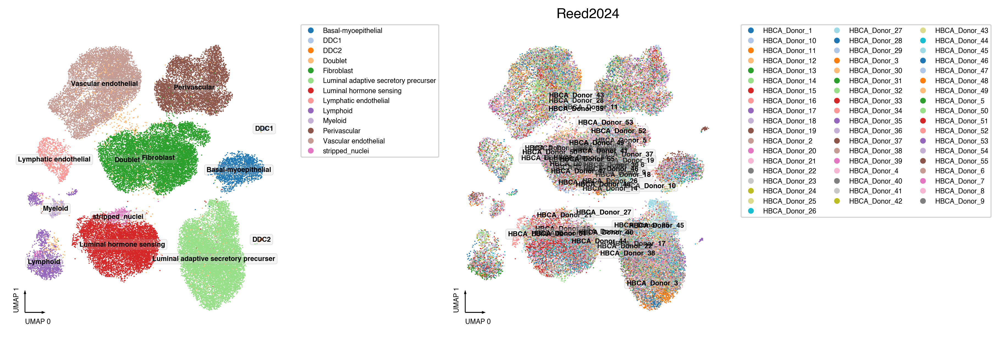
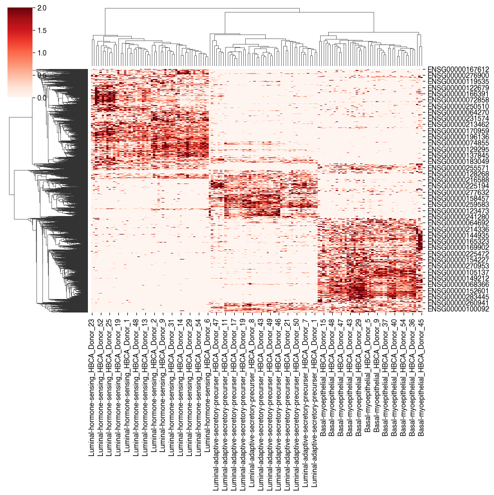
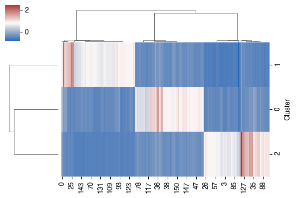
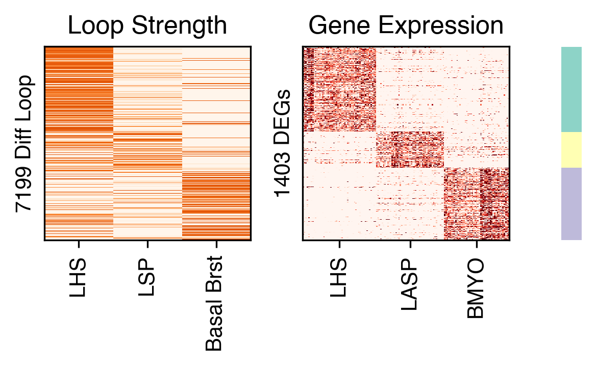
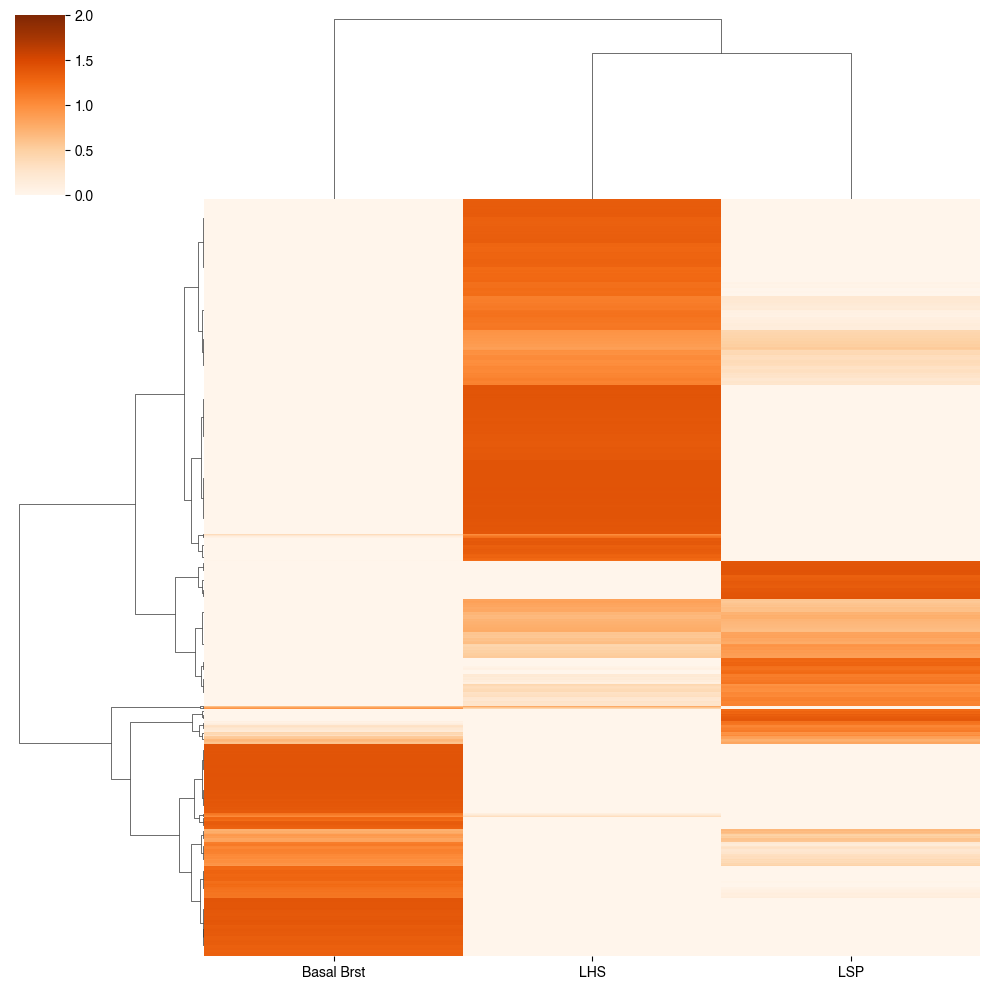
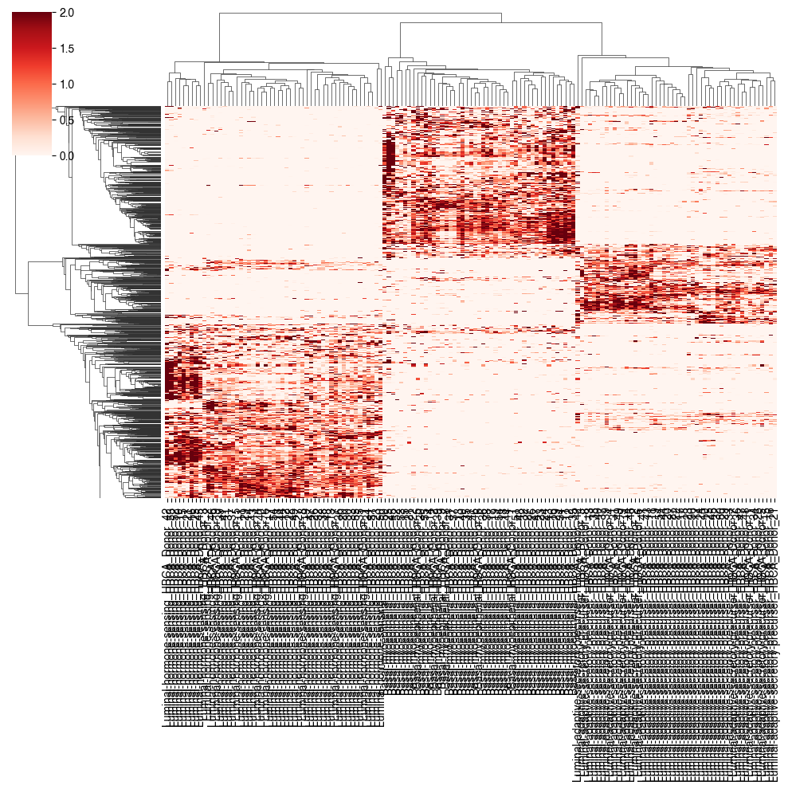
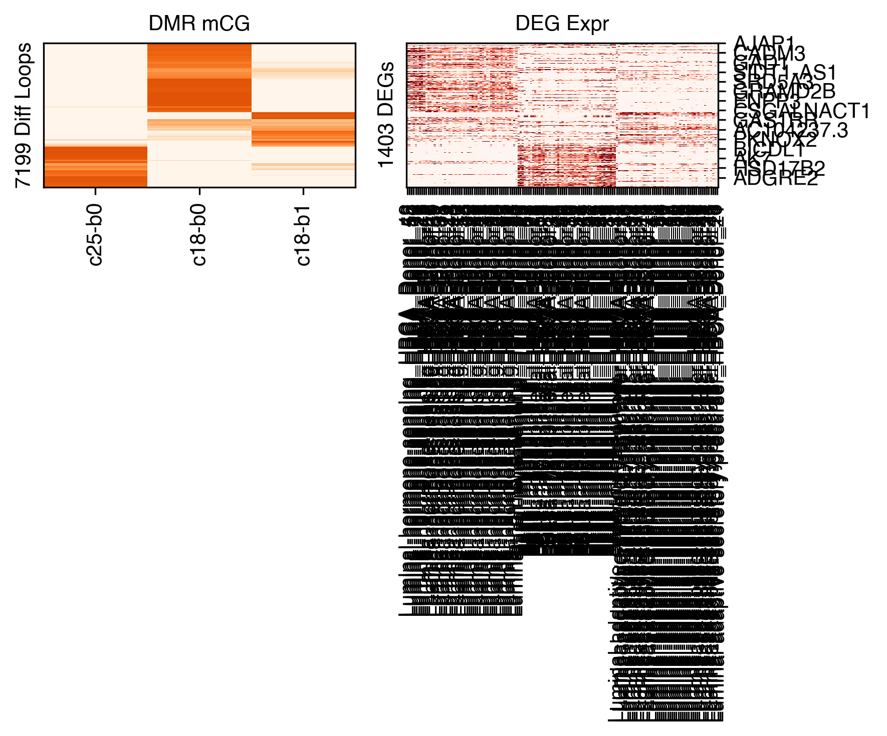
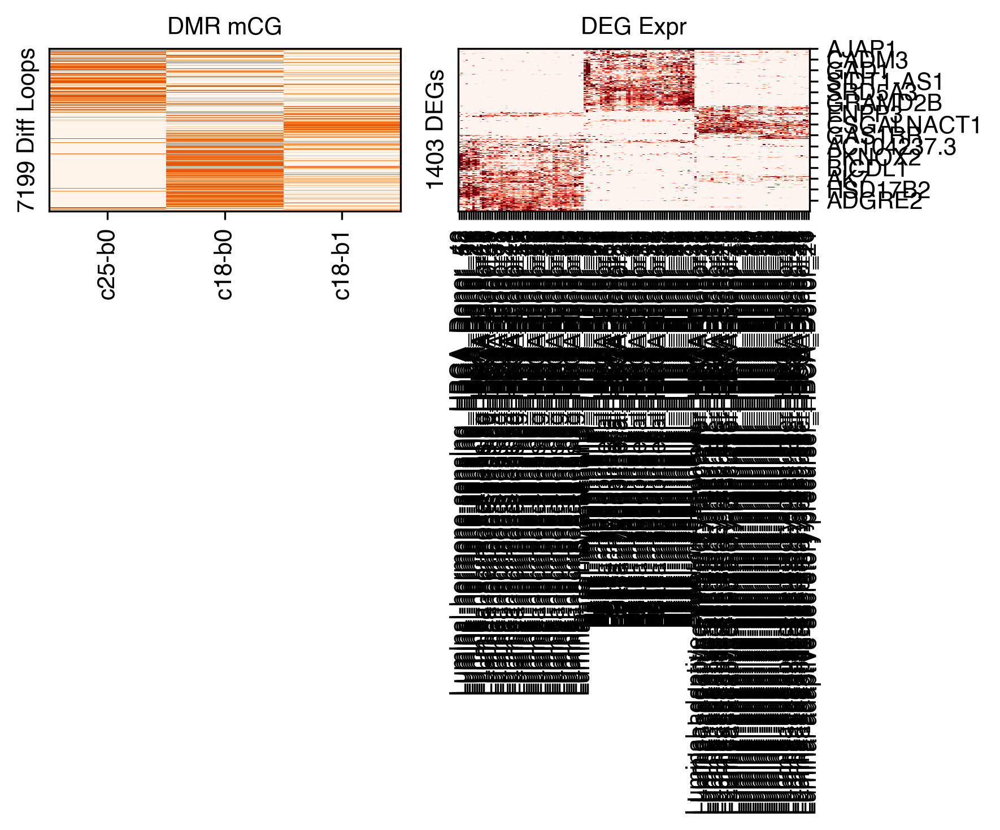
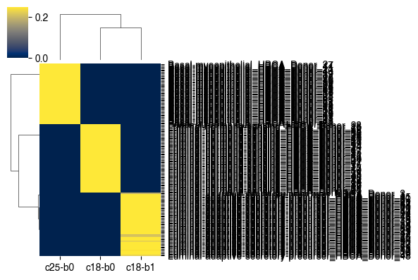
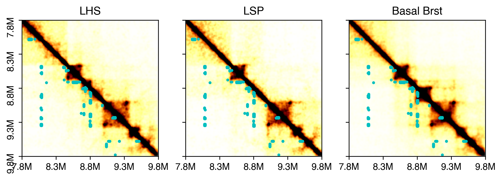

9. Loop rna#
Part of the Fig. 4 chapter — see it for the panel-by-panel map. The first code cell sets ENTEX_ROOT and activates the no-overwrite guard (see the Reproduction guide). Outputs shown are the author’s original run.
# === Reproduction setup — edit ENTEX_ROOT / REF_ROOT for your machine ===
import os, sys
ENTEX_ROOT = os.environ.get('ENTEX_ROOT', '/large_storage/zhoulab/zhoujt/project/ENTEx')
REF_ROOT = os.environ.get('REF_ROOT', '/large_storage/zhoulab/ref')
BOOK_ROOT = os.environ.get('BOOK_ROOT', f'{ENTEX_ROOT}/analysis/HumanCellEpigenomeAtlas')
sys.path.insert(0, BOOK_ROOT)
os.chdir(f'{ENTEX_ROOT}/analysis') # original working directory
import repro_guard # no-overwrite guard (default: skip existing)
from glob import glob
import anndata
import matplotlib as mpl
import matplotlib.pyplot as plt
import numpy as np
import pandas as pd
import scanpy as sc
import scanpy.external as sce
import seaborn as sns
from scipy.stats import zscore
from ALLCools.clustering import *
from ALLCools.integration.seurat_class import SeuratIntegration
from ALLCools.plot import *
from sklearn.metrics import pairwise_distances, roc_auc_score
from sklearn.preprocessing import normalize
mpl.style.use("default")
mpl.rcParams["pdf.fonttype"] = 42
mpl.rcParams["ps.fonttype"] = 42
mpl.rcParams["font.family"] = "sans-serif"
mpl.rcParams["font.sans-serif"] = "Helvetica"
import warnings
warnings.filterwarnings("ignore")
def dump_embedding(adata, name, n_dim=2):
# put manifold coordinates into adata.obs
for i in range(n_dim):
adata.obs[f'{name}_{i}'] = adata.obsm[f'X_{name}'][:, i]
return adata
indir = f'{ENTEX_ROOT}/'
outdir = f'{indir}analysis/loop_rna/'
group = 'Breast'
study = 'Reed2024'
gene_meta = pd.read_csv(f'{REF_ROOT}/hg38/gencode/v30/gencode.v30.annotation.gene.flat.tsv.gz', sep='\t', header=0)
gene_meta['gene_id_idx'] = gene_meta['gene_id'].str.split('.').str[0]
ens2gene = gene_meta.set_index('gene_id_idx')['gene_name'].to_dict()
gene2ens = gene_meta.set_index('gene_name')['gene_id_idx'].to_dict()
adata = anndata.read_h5ad(f'{indir}scRNA/{group}/{study}/{group}_{study}.h5ad')
adata
AnnData object with n_obs × n_vars = 803283 × 34455
obs: 'sampleID', 'sample_type_coarse', 'sample_type', 'processing_date', 'dissociation_minutes', 'parity', 'brca_status', 'condition', 'tissue_condition', 'reported_ethnicity', 'BMI', 'prob_spikein', 'prob_spikein_dblt', 'pred_spikein', 'n_genes', 'percent_mito', 'n_counts', 'level0_global', 'level1_global', 'level0', 'level1', 'level2', 'scrublet_score', 'scrublet_cluster_score', 'organism_ontology_term_id', 'tissue_ontology_term_id', 'assay_ontology_term_id', 'disease_ontology_term_id', 'cell_type_ontology_term_id', 'self_reported_ethnicity_ontology_term_id', 'development_stage_ontology_term_id', 'sex_ontology_term_id', 'donor_id', 'donor_age', 'risk_status', 'is_primary_data', 'suspension_type', 'tissue_type', 'cell_type', 'assay', 'disease', 'organism', 'sex', 'tissue', 'self_reported_ethnicity', 'development_stage', 'observation_joinid'
var: 'feature_types', 'genome', 'n_cells', 'highly_variable', 'means', 'dispersions', 'dispersions_norm', 'gene_name', 'feature_is_filtered', 'feature_name', 'feature_reference', 'feature_biotype', 'feature_length'
uns: 'batch_condition', 'citation', 'diffmap_evals', 'hvg', 'leiden', 'level0_colors', 'level0_global_colors', 'level1_colors', 'level1_global_colors', 'level2_colors', 'neighbors', 'normalization', 'parity_colors', 'risk_status_colors', 'sample_type_coarse_colors', 'sample_type_colors', 'schema_reference', 'schema_version', 'tissue_condition_colors', 'title', 'umap'
obsm: 'X_diffmap', 'X_scVI', 'X_umap'
obsp: 'connectivities', 'distances'
adata.obs[['level0', 'level1', 'level2']].value_counts().sort_index()
level0 level1 level2
Doublet Doublet Doublet 20774
Epithelial Basal-myoepithelial BMYO1 30074
BMYO2 1471
DDC1 DDC1 705
DDC2 DDC2 261
Luminal adaptive secretory precurser LASP1 73109
LASP2 54842
LASP3 50491
LASP4 7976
LASP5 209
Luminal hormone sensing LHS1 94935
LHS2 18115
LHS3 11373
Immune Lymphoid B_mem_switched 1619
B_mem_unswitched 476
B_naive 866
CD4_Th 1802
CD4_naive 1914
CD8_Tc1 2984
CD8_Tem 1075
CD8_Trm 9426
ILC 179
NK 183
NKT 282
Plasma_cell 623
Myeloid DC 243
Macro 2492
Macro-lipo 56
Stroma Fibroblast FB1 80168
FB2 76725
FB3 11334
FB4 8241
Lymphatic endothelial LE1 8407
LE2 5349
Perivascular PV1 27410
PV2 14828
PV3 22317
PV4 20158
PV5 5534
Vascular endothelial VEA 29436
VEAT 28785
VEC 14024
VEV 55113
stripped_nuclei stripped_nuclei stripped_nuclei 6899
Name: count, dtype: int64
ds = 0.5
coord_base = 'umap'
# npc = 30
# adata.obsm[f'X_{coord_base}'] = adata.obsm[f'RNA_pc{npc}hm_{coord_base}'].copy()
dump_embedding(adata, coord_base)
fig, axes = plt.subplots(1, 2, figsize=(12, 4), dpi=300, constrained_layout=True)
tmp = adata.obs.copy()
for j,yy in enumerate(['level1', 'donor_id']):
ax = axes[j]
_ = categorical_scatter(data=tmp,
ax=ax,
coord_base=coord_base,
hue=yy,
text_anno=yy,
labelsize=6,
s=ds*2,
palette='tab20',
scatter_kws={'rasterized':True},
# legend_kws={'ncol':1},
show_legend=True
)
ax.set_title(study, fontsize=12)
Text(0.5, 1.0, 'Reed2024')

adata.obs['celltype'] = adata.obs['level1'].astype(str)
adata.obs['celltype'] = adata.obs['celltype'].str.replace('_', '-').str.replace(' ', '-')
leg = pd.Index(['Basal-myoepithelial', 'Luminal-adaptive-secretory-precurser', 'Luminal-hormone-sensing'])
legname = pd.Index(['BMYO', 'LASP', 'LHS'])
legmap = {xx:yy for xx,yy in zip(leg, legname)}
adata.obs.loc[adata.obs['celltype'].isin(leg), ['celltype', 'donor_id']].value_counts()
celltype donor_id
Luminal-hormone-sensing HBCA_Donor_33 20046
Luminal-adaptive-secretory-precurser HBCA_Donor_38 14854
HBCA_Donor_45 11176
Luminal-hormone-sensing HBCA_Donor_44 9235
Luminal-adaptive-secretory-precurser HBCA_Donor_3 8919
...
HBCA_Donor_35 30
Basal-myoepithelial HBCA_Donor_28 26
Luminal-hormone-sensing HBCA_Donor_28 26
Luminal-adaptive-secretory-precurser HBCA_Donor_28 14
Basal-myoepithelial HBCA_Donor_20 2
Name: count, Length: 165, dtype: int64
celltype DEG, sex as replicates#
design = []
expr = []
for indiv in np.sort(adata.obs['donor_id'].unique()):
for ct in leg:
selc = (adata.obs['donor_id']==indiv) & (adata.obs['celltype']==ct)
if selc.sum()>100:
tmp = adata.raw.X[selc].sum(axis=0).A1
expr.append(tmp)
design.append([indiv, ct])
design = pd.DataFrame(design, columns=['donor_id', 'celltype'])
expr = pd.DataFrame(expr, columns=adata.raw.var.index)
expr = expr.loc[:, expr.columns.isin(gene_meta['gene_id_idx'])]
expr.to_hdf(f'{outdir}bulkexpr_{study}.hdf', key='data')
design.to_hdf(f'{outdir}design_{study}.hdf', key='data')
expr = pd.read_hdf(f'{outdir}bulkexpr_{study}.hdf', key='data')
design= pd.read_hdf(f'{outdir}design_{study}.hdf', key='data')
from pydeseq2.dds import DeseqDataSet
from pydeseq2.default_inference import DefaultInference
from pydeseq2.ds import DeseqStats
from pydeseq2.utils import load_example_data
from statsmodels.stats.multitest import multipletests as FDR
genes_to_keep = expr.columns[expr.sum(axis=0) >= 10]
counts_df = expr[genes_to_keep]
inference = DefaultInference(n_cpus=8)
dds = DeseqDataSet(
counts=counts_df,
metadata=design,
design_factors=['donor_id', 'celltype'],
refit_cooks=True,
inference=inference,
# n_cpus=8, # n_cpus can be specified here or in the inference object
)
dds.deseq2()
for i in range(len(leg)-1):
for j in range(i+1, len(leg)):
stat_res = DeseqStats(dds, contrast=['celltype', leg[i], leg[j]], inference=inference)
stat_res.summary()
deg_stats = stat_res.results_df.copy()
# deg_stats = pd.read_hdf(f'{outdir}DEG_SCT_VCT_stats.hdf', key='data')
deg_stats['pvalue'] = deg_stats['pvalue'].fillna(1)
deg_stats['fdr'] = FDR(deg_stats['pvalue'], alpha=0.05, method='fdr_bh')[1]
deg_stats.to_hdf(f'{outdir}DEG/DEG_{leg[i]}_{leg[j]}_stats.hdf', key='data')
selc = (np.abs(deg_stats['log2FoldChange'])>1) & (deg_stats['fdr']<1e-5)
print(leg[i], leg[j], selc.sum())
Log2 fold change & Wald test p-value: celltype Basal-myoepithelial vs Luminal-adaptive-secretory-precurser
baseMean log2FoldChange lfcSE stat \
ENSG00000238009 3.204873 0.463954 0.228868 2.027174
ENSG00000239945 0.117726 2.193014 1.691102 1.296796
ENSG00000241860 35.719211 -2.246180 0.177616 -12.646262
ENSG00000241599 0.172442 1.380551 1.057411 1.305596
ENSG00000236601 0.083038 3.095697 3.796753 0.815354
... ... ... ... ...
ENSG00000212907 8885.145002 -0.440029 0.073897 -5.954653
ENSG00000198886 23633.365240 -0.806815 0.071268 -11.320830
ENSG00000198786 5413.214443 -0.135598 0.094083 -1.441263
ENSG00000198695 295.328793 -1.521594 0.151822 -10.022235
ENSG00000198727 16927.696430 -0.572346 0.076900 -7.442729
pvalue padj
ENSG00000238009 4.264467e-02 6.194825e-02
ENSG00000239945 1.947013e-01 2.460818e-01
ENSG00000241860 1.173249e-36 9.912029e-36
ENSG00000241599 1.916899e-01 2.426444e-01
ENSG00000236601 4.148697e-01 NaN
... ... ...
ENSG00000212907 2.606236e-09 7.954535e-09
ENSG00000198886 1.034876e-29 7.061839e-29
ENSG00000198786 1.495103e-01 1.936647e-01
ENSG00000198695 1.217189e-23 6.757105e-23
ENSG00000198727 9.862621e-14 3.790090e-13
[27046 rows x 6 columns]
Basal-myoepithelial Luminal-adaptive-secretory-precurser 5829
Log2 fold change & Wald test p-value: celltype Basal-myoepithelial vs Luminal-hormone-sensing
baseMean log2FoldChange lfcSE stat \
ENSG00000238009 3.204873 -0.016092 0.230521 -0.069809
ENSG00000239945 0.117726 1.505980 1.640384 0.918065
ENSG00000241860 35.719211 -0.974915 0.177018 -5.507443
ENSG00000241599 0.172442 1.693888 1.061840 1.595239
ENSG00000236601 0.083038 1.314193 3.664345 0.358643
... ... ... ... ...
ENSG00000212907 8885.145002 0.140689 0.071684 1.962624
ENSG00000198886 23633.365240 -0.182282 0.069116 -2.637346
ENSG00000198786 5413.214443 0.320975 0.091264 3.517007
ENSG00000198695 295.328793 -1.170796 0.148355 -7.891840
ENSG00000198727 16927.696430 0.042590 0.074578 0.571086
pvalue padj
ENSG00000238009 9.443457e-01 9.525357e-01
ENSG00000239945 3.585847e-01 NaN
ENSG00000241860 3.640827e-08 8.971303e-08
ENSG00000241599 1.106588e-01 1.468796e-01
ENSG00000236601 7.198619e-01 NaN
... ... ...
ENSG00000212907 4.968989e-02 7.087280e-02
ENSG00000198886 8.355750e-03 1.358365e-02
ENSG00000198786 4.364417e-04 8.150203e-04
ENSG00000198695 2.977629e-15 1.012186e-14
ENSG00000198727 5.679414e-01 6.199621e-01
[27046 rows x 6 columns]
Basal-myoepithelial Luminal-hormone-sensing 6714
Log2 fold change & Wald test p-value: celltype Luminal-adaptive-secretory-precurser vs Luminal-hormone-sensing
baseMean log2FoldChange lfcSE stat \
ENSG00000238009 3.204873 -0.480047 0.140920 -3.406517
ENSG00000239945 0.117726 -0.687034 1.584004 -0.433733
ENSG00000241860 35.719211 1.271264 0.135722 9.366679
ENSG00000241599 0.172442 0.313337 0.975354 0.321254
ENSG00000236601 0.083038 -1.781504 3.602409 -0.494531
... ... ... ... ...
ENSG00000212907 8885.145002 0.580717 0.070337 8.256185
ENSG00000198886 23633.365240 0.624533 0.067913 9.196027
ENSG00000198786 5413.214443 0.456573 0.089567 5.097583
ENSG00000198695 295.328793 0.350798 0.139157 2.520878
ENSG00000198727 16927.696430 0.614936 0.073271 8.392669
pvalue padj
ENSG00000238009 6.579734e-04 1.249346e-03
ENSG00000239945 6.644825e-01 NaN
ENSG00000241860 7.485066e-21 3.732447e-20
ENSG00000241599 7.480175e-01 8.166636e-01
ENSG00000236601 6.209309e-01 NaN
... ... ...
ENSG00000212907 1.504019e-16 6.221912e-16
ENSG00000198886 3.714293e-20 1.801388e-19
ENSG00000198786 3.440175e-07 8.478591e-07
ENSG00000198695 1.170623e-02 1.926377e-02
ENSG00000198727 4.752267e-17 2.010207e-16
[27046 rows x 6 columns]
Luminal-adaptive-secretory-precurser Luminal-hormone-sensing 5440
for i in range(len(leg)-1):
for j in range(i+1, len(leg)):
deg_stats = pd.read_hdf(f'{outdir}DEG/DEG_{leg[i]}_{leg[j]}_stats.hdf', key='data')
selc = (np.abs(deg_stats['log2FoldChange'])>2) & (deg_stats['fdr']<1e-10)
print(leg[i], leg[j], selc.sum())
if (i==0) and (j==1):
selg = pd.Index(np.zeros(deg_stats.shape[0]))
else:
selg = selg | selc
print(selg.sum())
Basal-myoepithelial Luminal-adaptive-secretory-precurser 2391
Basal-myoepithelial Luminal-hormone-sensing 2915
Luminal-adaptive-secretory-precurser Luminal-hormone-sensing 2322
4163
exprtmp = expr / expr.sum(axis=1).values[:, None] * 1e6
exprtmp = exprtmp[deg_stats.index[selg]]
exprtmp.index = design['celltype'].astype(str) + '_' + design['donor_id'].astype(str)
cg = sns.clustermap(zscore(exprtmp.T, axis=1), metric='cosine', cmap='Reds', vmin=0, vmax=2)

import cooler
chrom_size_path = '/large_experiments/zhoulab/ref/hg38/fasta/hg38.main.chrom.sizes'
chrom_sizes = cooler.read_chromsizes(chrom_size_path, all_names=True)
chrom_sizes = chrom_sizes.iloc[:22]
3Ccluster diff loop#
res = 10000
L2_meta = pd.read_csv(f'{indir}subtype_meta.tsv', sep='\t', header=0, index_col=0)
L2_annot = L2_meta['celltype_L2_both_abbr'].to_dict()
loopdir = f'{ENTEX_ROOT}/analysis/diff_loop/EpiBrst/'
loopall = pd.read_hdf(f'{loopdir}merged_loop.hdf', key='data')
loopq = pd.read_hdf(f'{loopdir}loop_Q.hdf', key='data')
loopt = pd.read_hdf(f'{loopdir}loop_T.hdf', key='data')
from scipy.stats import norm, zscore
thres1 = norm.isf(0.025)
thres2 = norm.isf(0.15)
print(thres1, thres2)
fdrthres = 0.01
1.9599639845400545 1.0364333894937898
statfilter = (zscore(np.log10(loopall['Qanova']))>thres2) & (zscore(np.log10(loopall['Tanova']))>thres2)
fdrfilter = (loopall['Qfdr']<fdrthres) & (loopall['Efdr']<fdrthres) & (loopall['Tfdr']<fdrthres)
selloop = statfilter # & fdrfilter
print(statfilter.sum(), fdrfilter.sum(), selloop.sum())
70949 103048 70949
diffloop = loopall.loc[selloop, [0,1,4]]
diffloop[[1, 4]] = diffloop[[1, 4]] // res
diffloop = diffloop.reset_index()
diffloop
| index | 0 | 1 | 4 | |
|---|---|---|---|---|
| 0 | 261 | chr1 | 192 | 204 |
| 1 | 273 | chr1 | 193 | 204 |
| 2 | 274 | chr1 | 193 | 205 |
| 3 | 275 | chr1 | 193 | 206 |
| 4 | 286 | chr1 | 194 | 204 |
| ... | ... | ... | ... | ... |
| 70944 | 1110022 | chr22 | 5052 | 5058 |
| 70945 | 1110023 | chr22 | 5052 | 5059 |
| 70946 | 1110024 | chr22 | 5052 | 5060 |
| 70947 | 1110025 | chr22 | 5052 | 5061 |
| 70948 | 1110026 | chr22 | 5052 | 5062 |
70949 rows × 4 columns
data = pd.read_csv(f'{indir}hg38.main.10kbin.TSS.slop2k.txt', sep='\t', header=None, index_col=None)
data[6] = data[6].str.split('.').str[0]
data[3] = data[0] + '-' + (data[1] // res).astype(str)
bin2gene = {xx:[] for xx in data[3].values}
data = data[data[6].isin(exprtmp.columns)]
for xx,yy in data[[3,6]].values:
bin2gene[xx].append(yy)
selloop = []
selgene = []
for loop in diffloop[[0, 1, 4, 'index']].values:
xx = f'{loop[0]}-{loop[1]}'
yy = f'{loop[0]}-{loop[2]}'
zz = bin2gene[xx] + bin2gene[yy]
if len(zz)>0:
selloop.append(np.repeat([loop[3]], len(zz)))
selgene.append(zz)
selloop = np.concatenate(selloop)
selgene = np.concatenate(selgene)
print(len(selloop), len(selgene))
8070 8070
tmp3c = loopq.loc[selloop]
tmp3c = zscore(tmp3c, axis=1)
tmprna = exprtmp.loc[:, selgene].T
tmprna = zscore(tmprna, axis=1)
def order_row(data, nc):
data = data.reset_index(drop=True)
# Perform KMeans clustering
kmeans = KMeans(n_clusters=nc, random_state=0, n_init=10)
clusters = kmeans.fit_predict(data)
# Create a new dataframe with cluster labels
cluster_df = pd.DataFrame({'Cluster': clusters}, index=data.index)
# Sort the data by cluster and plot the heatmap
merged_data = pd.concat([data, cluster_df], axis=1).groupby(by='Cluster').mean()
cg = sns.clustermap(merged_data, cmap='vlag', metric='cosine', figsize=(6,4))
rorder = cg.dendrogram_row.reordered_ind.copy()
corder = cg.dendrogram_col.reordered_ind.copy()
leg = merged_data.index[rorder]
count = pd.Series(clusters).value_counts().loc[leg]
sorted_data = pd.concat([data[clusters==i] for i in leg], axis=0)
return sorted_data, count, cluster_df, corder
from sklearn.cluster import KMeans
import matplotlib.patches as patches
nc = 3
group_palette = sns.color_palette('Set3', nc)
tmp = np.concatenate([tmp3c.values, tmprna.values], axis=1)
tmp, count, label, corder = order_row(pd.DataFrame(tmp), nc=nc)
corder = pd.Index(corder)
corder_3c = corder[corder<len(leg)]
corder_rna = corder[corder>=len(leg)] - len(leg)
fig, axes = plt.subplots(1, 3, figsize=(4,2.5), dpi=300, sharey='all',
gridspec_kw={'width_ratios': [10, 10, 1]})
ax = axes[0]
ax.imshow(tmp3c.iloc[tmp.index, corder_3c], cmap='Oranges', aspect='auto',
interpolation='none', rasterized=True, vmin=0, vmax=2)
ax.set_xticks(np.arange(tmp3c.shape[1]))
ax.set_xticklabels(tmp3c.columns[corder_3c].map(L2_annot), rotation=90)
ax.set_yticks([])
ax.set_ylabel(f'{np.unique(selloop).shape[0]} Diff Loop')
ax.set_title('Loop Strength')
ax = axes[1]
ax.imshow(tmprna.iloc[tmp.index, corder_rna], cmap='Reds', aspect='auto',
vmin=0, vmax=2, interpolation='none', rasterized=True)
xticks = pd.Series(tmprna.columns[corder_rna].str.split('_').str[0]).reset_index().groupby(0)['index'].mean().sort_values()
ax.set_xticks(xticks)
ax.set_xticklabels(xticks.index.map(legmap), rotation=90)
ax.set_yticks([])
ax.set_ylabel(f'{np.unique(selgene).shape[0]} DEGs')
ax.set_title('Gene Expression')
ax = axes[2]
offset = [0] + list(count.cumsum())
ax.axis('off')
for k in range(nc):
rect = patches.Rectangle((0, offset[k]), 1, offset[k+1]-offset[k], linewidth=0,
edgecolor='none', facecolor=group_palette[k])
ax.add_patch(rect)
fig.tight_layout()
fig.savefig(f'{outdir}EpiBrst_diffloop_deg_heatmap.pdf', transparent=True)
# ax.set_yticks(count.cumsum()-0.5)
# ax.set_yticklabels(count.index)


cg = sns.clustermap(tmp3c, cmap='Oranges', vmin=0, vmax=2, metric='cosine',
xticklabels=loopq.columns.map(L2_annot), yticklabels=[])

rorder_3c = cg.dendrogram_row.reordered_ind.copy()
corder_3c = cg.dendrogram_col.reordered_ind.copy()
cg = sns.clustermap(tmprna, cmap='Reds', vmin=0, vmax=2, metric='cosine', xticklabels=exprtmp.index, yticklabels=[])

rorder_rna = cg.dendrogram_row.reordered_ind.copy()
corder_rna = cg.dendrogram_col.reordered_ind.copy()
nrow = selloop.shape[0]
print(nrow)
fig, axes = plt.subplots(1, 2, figsize=(6,5), dpi=300)
ax = axes[0]
# ax.imshow(data.loc[dmr_gene_map.index].iloc[rorder_mc].iloc[:, corder_mc],
# cmap='Greens_r', aspect='auto', interpolation='none', rasterized=True)
ax.imshow(tmp3c[rorder_3c][:, corder_3c], cmap='Oranges', aspect='auto',
interpolation='none', rasterized=True, vmin=0, vmax=2)
ax.set_title('DMR mCG', fontsize=10)
# sns.despine(ax=ax, left=True, bottom=True)
# ax.set_xticks(np.arange(data.shape[1]))
# ax.set_xticklabels(data.columns[corder], rotation=90)
ax.set_xticks(np.arange(loopq.shape[1]))
ax.set_xticklabels(loopq.columns[corder_3c].map(L2_annot), rotation=90)
ax.set_yticks([])
ax.set_ylabel(f'{np.unique(selloop).shape[0]} Diff Loops')
ax = axes[1]
ax.imshow(tmprna[rorder_3c][:, corder_rna], cmap='Reds', aspect='auto',
vmin=0, vmax=2, interpolation='none', rasterized=True)
ax.set_title('DEG Expr', fontsize=10)
# sns.despine(ax=ax, left=True, bottom=True)
ax.set_xticks(np.arange(exprtmp.shape[0]))
ax.set_xticklabels(exprtmp.index[corder_rna], rotation=90)
selidx = np.arange(0, nrow, nrow//15)
ax.tick_params(axis='y', right=True, left=False, labelright=True, labelleft=False)
ax.set_yticks(selidx)
ax.set_yticklabels(pd.Index(selgene).map(ens2gene).values[selidx])
ax.set_ylabel(f'{np.unique(selgene).shape[0]} DEGs')
fig.tight_layout()
# fig.savefig(f'{outdir}{group_name}_DMR_Expr_heatmap.pdf', transparent=True)
8070

nrow = selloop.shape[0]
print(nrow)
fig, axes = plt.subplots(1, 2, figsize=(6,5), dpi=300)
ax = axes[0]
# ax.imshow(data.loc[dmr_gene_map.index].iloc[rorder_mc].iloc[:, corder_mc],
# cmap='Greens_r', aspect='auto', interpolation='none', rasterized=True)
ax.imshow(tmp3c[rorder_rna][:, corder_3c], cmap='Oranges', aspect='auto',
interpolation='none', rasterized=True, vmin=0, vmax=2)
ax.set_title('DMR mCG', fontsize=10)
# sns.despine(ax=ax, left=True, bottom=True)
# ax.set_xticks(np.arange(data.shape[1]))
# ax.set_xticklabels(data.columns[corder], rotation=90)
ax.set_xticks(np.arange(loopq.shape[1]))
ax.set_xticklabels(loopq.columns[corder_3c], rotation=90)
ax.set_yticks([])
ax.set_ylabel(f'{np.unique(selloop).shape[0]} Diff Loops')
ax = axes[1]
ax.imshow(tmprna[rorder_rna][:, corder_rna], cmap='Reds', aspect='auto',
vmin=0, vmax=2, interpolation='none', rasterized=True)
ax.set_title('DEG Expr', fontsize=10)
# sns.despine(ax=ax, left=True, bottom=True)
ax.set_xticks(np.arange(exprtmp.shape[0]))
ax.set_xticklabels(exprtmp.index[corder_rna], rotation=90)
selidx = np.arange(0, nrow, nrow//15)
ax.tick_params(axis='y', right=True, left=False, labelright=True, labelleft=False)
ax.set_yticks(selidx)
ax.set_yticklabels(pd.Index(selgene).map(ens2gene).values[selidx])
ax.set_ylabel(f'{np.unique(selgene).shape[0]} DEGs')
fig.tight_layout()
# fig.savefig(f'{outdir}{group_name}_DMR_Expr_heatmap.pdf', transparent=True)
8070

dist = pairwise_distances(tmp3c.T, tmprna.T, metric='correlation')
dist = pd.DataFrame(1 - dist, index=loopq.columns, columns=exprtmp.index)
sns.clustermap(dist.T, figsize=(6,4), cmap='cividis', vmin=0, vmax=0.25, metric='cosine', xticklabels=1, yticklabels=1)
<seaborn.matrix.ClusterGrid at 0x7f7c5a66f6a0>

pd.Series(selgene).map(ens2gene).value_counts()
AC104237.3 60
CCDC68 56
OXTR 50
PRLR 46
AL390294.1 46
..
ARHGAP20 1
IL18 1
S100A14 1
S100A2 1
GORAB-AS1 1
Name: count, Length: 1403, dtype: int64
leg = pd.Index(['c18-b0', 'c18-b1', 'c25-b0'])
cooldir = f'{indir}loop/subtype/'
gtmp = 'OXTR'
lslop, rslop = 1000000, 1000000
chrom, start, end, strand = gene_meta.loc[gene_meta['gene_name']==gtmp, ['chrom', 'start', 'end', 'strand']].iloc[0]
if strand=='+':
tss = start
else:
tss = end
ll, rr = (tss - lslop), (tss + rslop)
print(chrom, ll, rr)
chr3 7769628 9769628
resl = 10000
loopl, loopr = (ll//resl), (rr//resl)
print(loopl, loopr)
776 976
## Load cell type Q
from scipy import ndimage as nd
dstall = []
for ct in leg:
cool = cooler.Cooler(f'{cooldir}{ct}/{ct}.Q.cool')
Q = cool.matrix(balance=False, sparse=True).fetch(chrom).tocsr()
tmp = Q[loopl:loopr, loopl:loopr].toarray()
dstall.append(tmp)
print(ct)
c18-b0
c18-b1
c25-b0
loopr
976
fig, axes = plt.subplots(1, len(leg), figsize=(3*len(leg), 3), sharex='all', sharey='all', dpi=300)
## differential feature position at 10k resolution
tmpl = loopall.loc[selloop, [1,4]] // resl - loopl
tmpl = tmpl.loc[(tmpl[1]>0) & (tmpl[4]<(loopr-loopl))].values
for i in range(len(leg)):
ax = axes[i]
# ax.axis('equal')
ax.set_title(leg.map(L2_annot)[i])
img = ax.imshow(dstall[i], cmap='afmhot_r', vmin=0, vmax=0.012)
## plot diff loop
ax.scatter(tmpl[:, 0], tmpl[:, 1], alpha=1, s=10, marker='o', edgecolors='none', color='c', rasterized=True)
ax.set_xlim([0, loopr-loopl])
ax.set_ylim([loopr-loopl, 0])
step = (loopr-loopl)//4
ticks = np.arange(0, loopr-loopl+1, step)
ticklabels = [f'{np.around(xx*resl/1e6, decimals=1)}M' for xx in np.arange(loopl, loopr+1, step)]
ax.set_xticks(ticks)
ax.set_xticklabels(ticklabels, fontsize=10)
ax.set_yticks(ticks)
ax.set_yticklabels(ticklabels, fontsize=10, rotation=90)
# fig.tight_layout()
fig.savefig(f'{outdir}diffloop_{gtmp}.pdf', transparent=True, dpi=300)
